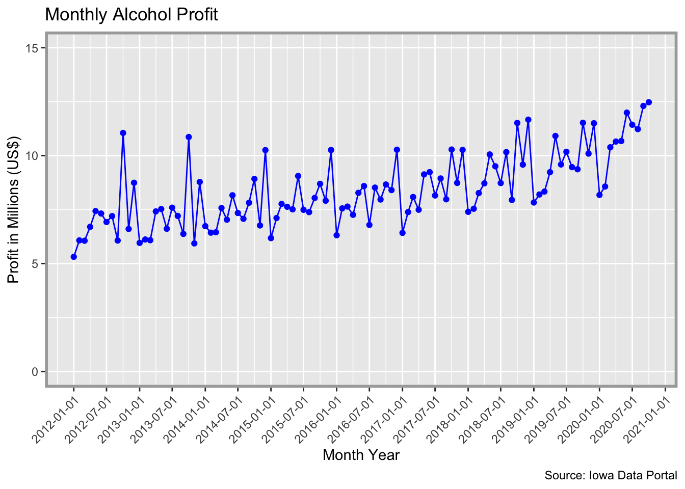

The {ialiquor} package provides a summary of the monthly liquor sales by county and by liquor type in the State of Iowa. This dataset comes from the Iowa Data Portal and is limited to beverages classified as Class E. Class E beverages (as according to Iowa) are:
For grocery, liquor and convenience stores, etc. Allows for the sale of alcoholic liquor for off-premises consumption in original unopened containers. No sales by the drink. Sunday sales are included. Also allows wholesale sales to on-premises Class A, B, C and D liquor licensees but must have a TTB Federal Wholesale Basic Permit.
In other words, this dataset is limited to retailers that are essentially selling “hard” liquor. This does not include data for beer sales (which is a Class C license) or wine (which is a Class B license).
WIP
Installation
This package is not available on CRAN, but can be installed from GitHub:
# install.packages("devtools")
devtools::install_github("nikdata/ialiquor", ref = "main")Usage
The {ialiquor} package provides a monthly summary of the alcohol (class
E) sales in the State of Iowa. There are two different datasets contained that provide total revenue, total cost to state, total bottles sold, and total volume sold (in liters) by either category (e.g., imported vodka, spearmint schnapps, etc.) or county name.
Preview of County Sales
library(ialiquor)
library(dplyr)
#>
#> Attaching package: 'dplyr'
#> The following objects are masked from 'package:stats':
#>
#> filter, lag
#> The following objects are masked from 'package:base':
#>
#> intersect, setdiff, setequal, union
data('county_sales')
dplyr::glimpse(county_sales)
#> Rows: 11,869
#> Columns: 7
#> $ year_mon <dttm> 2012-01-01, 2012-01-01, 2012-01-01, 2012-01-01, 2012-…
#> $ county <chr> "Adair", "Adams", "Allamakee", "Appanoose", "Audubon",…
#> $ county_number <chr> "01", "02", "03", "04", "05", "06", "07", "08", "09", …
#> $ state_cost <dbl> 16606.07, 5856.93, 31804.52, 25961.56, 8965.06, 27215.…
#> $ bottles_sold <dbl> 2263, 686, 3933, 3571, 1188, 3403, 89084, 7283, 10725,…
#> $ retail_revenue <dbl> 24967.11, 8803.29, 47799.05, 38976.62, 13472.98, 40914…
#> $ liters_sold <dbl> 2165.94, 701.04, 4177.72, 3395.90, 1245.01, 3474.91, 6…Preview of Category Sales
library(ialiquor)
library(dplyr)
data('category_sales')
dplyr::glimpse(category_sales)
#> Rows: 6,492
#> Columns: 7
#> $ year_mon <dttm> 2012-01-01, 2012-01-01, 2012-01-01, 2012-01-01, 2012-…
#> $ type <chr> "vodka", "other", "liqueur", "cocktail", "gin", "brand…
#> $ category <chr> "100 proof vodka", "american alcohol", "american amare…
#> $ state_cost <dbl> 69602.62, 30443.92, 36267.20, 247123.89, 164411.67, 15…
#> $ retail_revenue <dbl> 104432.75, 45665.88, 54408.14, 375718.34, 246903.72, 2…
#> $ bottles_sold <dbl> 12326, 3796, 8749, 35344, 37016, 39683, 646, 68, 5773,…
#> $ liters_sold <dbl> 14100.75, 2847.00, 8006.00, 50682.25, 28496.46, 20741.…Potential Use Cases
Monthly Profit by Year Month
library(dplyr)
library(ggplot2)
library(ialiquor)
data("county_sales")
county_sales %>%
dplyr::group_by(year_mon) %>%
dplyr::summarize(
total_cost = sum(state_cost),
total_revenue = sum(retail_revenue),
state_profit = (total_revenue-total_cost)/1000000,
.groups = 'drop'
) %>%
ggplot2::ggplot(ggplot2::aes(x = year_mon, y = state_profit)) +
ggplot2::geom_line(color = 'blue') +
ggplot2::geom_point(ggplot2::aes(y = state_profit), color = 'blue') +
ggplot2::labs(x = 'Month Year', y = "Profit in Millions (US$)", title = 'Monthly Alcohol Profit', caption = 'Source: Iowa Data Portal') +
ggplot2::ylim(0,15) +
ggplot2::scale_x_datetime(date_breaks = '6 months') +
ggplot2::theme(axis.text.x = ggplot2::element_text(angle = 45, hjust = 1),
panel.border = ggplot2::element_rect(color = 'darkgray', fill = NA, size = 2))
Top 10 Alcohol Categories by Liters Sold
library(dplyr)
library(ialiquor)
data("category_sales")
category_sales %>%
dplyr::group_by(type) %>%
dplyr::summarize(
total_liters_sold = sum(liters_sold),
.groups = 'keep'
) %>%
dplyr::arrange(desc(total_liters_sold)) %>%
dplyr::top_n(10)
#> Selecting by total_liters_sold
#> # A tibble: 12 x 2
#> # Groups: type [12]
#> type total_liters_sold
#> <chr> <dbl>
#> 1 whiskey 55877755.
#> 2 vodka 55411656.
#> 3 rum 23394506.
#> 4 liqueur 8626919.
#> 5 tequila 7060417.
#> 6 schnapps 6982939.
#> 7 cocktail 6721458.
#> 8 other 5579965.
#> 9 brandy 5531661.
#> 10 gin 4989163.
#> 11 unknown 187463.
#> 12 beer 40.5